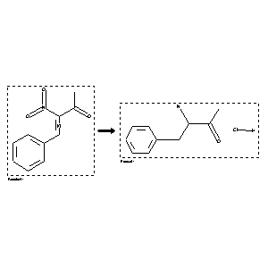

 |
| FA | RX(1); FLST(1); RX(2) |
Reaction (1 of 1)
| Reaction ID | 2126411 |
| Reactant BRN | 2329493 |
| Reactant | (Z)-4-phenyl-3-nitro-3-buten-2-one |
| Product BRN | 3915106 |
| Product | 3-amino-4-phenyl-butan-2-one; hydrochloride |
| No. of Reaction Details | 2 |
Reaction Details (1 of 1)
| Reaction Classification | Chemical behaviour |
| Reagent | H2SO4 |
| Solvent | acetonitrile; H2O |
| Other Conditions | electrolysis; several voltage |
| Subject Studied | Mechanism; Product distribution |
| Citation Pointer | 5663729; Journal; Marcot, Bernard; Rabaron, Alain; Viel, Claude; Bellec, Christian; Deswarte, Stephane; Maitte, Pierre; CJCHAG; Can.J.Chem.; FR; 59; 1981; 1224-1234; |
Reaction Details (2 of 1)
| Reaction Classification | Preparation |
| Reagent | 1 N H2SO4 |
| Solvent | acetonitrile; H2O |
| Other Conditions | electrolysis; pH=1.16 |
| Citation Pointer | 5663729; Journal; Marcot, Bernard; Rabaron, Alain; Viel, Claude; Bellec, Christian; Deswarte, Stephane; Maitte, Pierre; CJCHAG; Can.J.Chem.; FR; 59; 1981; 1224-1234; |
Reference (1 of 1)
| Citation Number | 5663729 |
| Document Type | Journal |
| Authors | Marcot, Bernard; Rabaron, Alain; Viel, Claude; Bellec, Christian; Deswarte, Stephane; Maitte, Pierre |
| CODEN | CJCHAG |
| Journal Title | Can.J.Chem. |
| Language Code | FR |
| (Series) Volume | 59 |
| Publication Year | 1981 |
| Page | 1224-1234 |